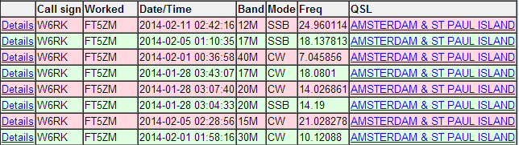

[
Date Prev
][
Date Next
][
Thread Prev
][
Thread Next
][
Date Index
][
Thread Index
]
[NCDXC Chat] Amsterdam Island in LoTW
To
: NCDXC Discussion List <
chat@ncdxc.org
>
Subject
: [NCDXC Chat] Amsterdam Island in LoTW
From
: Risto Kotalampi via Chat <
chat@ncdxc.org
>
Date
: Mon, 12 May 2014 14:40:42 -0700
List-archive
: <
http://mail.ncdxc.org/mailman/private/chat_ncdxc.org/
>
List-help
: <
mailto:chat-request@ncdxc.org?subject=help
>
List-id
: NCDXC Discussion List <chat.ncdxc.org>
List-post
: <
mailto:chat@ncdxc.org
>
List-subscribe
: <
http://mail.ncdxc.org/mailman/listinfo/chat_ncdxc.org
>, <
mailto:chat-request@ncdxc.org?subject=subscribe
>
List-unsubscribe
: <
http://mail.ncdxc.org/mailman/options/chat_ncdxc.org
>, <
mailto:chat-request@ncdxc.org?subject=unsubscribe
>
Reply-to
: Risto Kotalampi <
risto@kotalampi.com
>
I am happy, all QSOs matched at LoTW.

--
Risto Kotalampi
Hayward, CA
Prev by Date:
[NCDXC Chat] TO6A 24900 simplex NA-114 IOTA
Next by Date:
[NCDXC Chat] SPOT: ST5T (Sudan) 18.081.7 -- Loud N. CA
Previous by thread:
[NCDXC Chat] TO6A 24900 simplex NA-114 IOTA
Next by thread:
[NCDXC Chat] SPOT: ST5T (Sudan) 18.081.7 -- Loud N. CA
Index(es):
Date
Thread